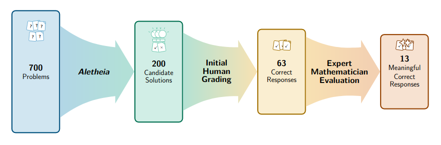

Can we accelerate formal mathematics with AI?
Rémy Degenne Inria center at the University of Lille; Mathlib maintainer

Lean
-
A functional programming language
-
A proof assistant: write theorems and proofs. A compiler checks that your proofs are correct.
Write proofs about programs.
Write programs that produce proofs.
Mathematics in Lean
variable {Ω : Type*} [mΩ : MeasurableSpace Ω]
[StandardBorelSpace Ω]
{P : Measure Ω} [IsProbabilityMeasure P]
{X : ℕ → Ω → ℝ} {c : ℕ → ℝ≥0} {ℱ : Filtration ℕ mΩ}
/-- Chernoff tail bound for sub-Gaussian random
variables. -/
example (h_adapted : StronglyAdapted ℱ X)
(h0 : HasSubgaussianMGF (X 0) (c 0) P) (n : ℕ)
(h_subG : ∀ i < n - 1, HasCondSubgaussianMGF (ℱ i)
(ℱ.le i) (X (i + 1)) (c (i + 1)) P)
{ε : ℝ} (hε : 0 ≤ ε) :
P.real {ω | ε ≤ ∑ i ∈ range n, X i ω}
≤ exp (-ε ^ 2 / (2 * ∑ i ∈ range n, c i)) :=
(HasSubgaussianMGF.sum_of_hasCondSubgaussianMGF h_adapted
h0 n h_subG).measure_ge_le hε
example (h_adapted : StronglyAdapted ℱ X) (n : ℕ)
{ε : ℝ} (hε : 0 ≤ ε) :
P.real {ω | ε ≤ ∑ i ∈ range n, X i ω}
≤ exp (-ε ^ 2 / (2 * ∑ i ∈ range n, c i)) :=
(HasSubgaussianMGF.sum_of_hasCondSubgaussianMGF h_adapted
h0 n h_subG).measure_ge_le hε
Why formal mathematics?
(from the AI for maths perspective)

Human grading, expert mathematicians are expensive.
Mathlib
A community-driven library of formalized mathematics in Lean.
-
open source (772 contributors). 29 maintainers, 59+ reviewers
-
infrastucture: CI, testing, documentation
-
Not merely formalized: digested, generalized, organized, reusable.
-
most of an undergraduate mathematics curriculum
Almost entirely human-written
Autoformalization
You can ask an AI agent to write Lean code for you.
If there are not too many missing prerequisites between your request and Mathlib, it mostly works.
-
Strong PNT and Sphere Packing by Math Inc
-
Book level formalization by Meta
-
Formalization of the disproof of the unit distance conjecture by Boris Alexeev using Codex
The Mathlib Halo

Beyond the halo, you need a very good harness, domain knowledge and/or lots of resources for your AI to produce working code.
My experience: collaborative projects
-
Brownian motion project: formalize BM and stochastic calculus in Lean. Open to anyone. ∼25 contributors. Goal: prepare contributions to Mathlib.
-
Lean Machine Learning, http://leanmachinelearning.org.
New: AI-generated pull requests (PRs).
Challenge: huge PRs, dubious quality. Reviewing is not teaching.
Autoformalizing my preprint
On Response-Adaptive Targeting Strategies for Multi-Treatment Experiments, Redouane Yagouti, RD, Emilie Kaufmann
Asymptotic convergence, normality of random variables. Martingale tools: LLN, CLT, LIL.
Issues
duplicated definitions (and lemmas about them)
theorem integral_predQuadVar_succ_sub [IsFiniteMeasure μ] (hM : Martingale M ℱ μ)
(hM2 : ∀ n, Integrable (fun ω => M n ω ^ 2) μ) (n : ℕ)
(hd2 : Integrable (fun ω => (M (n + 1) ω - M n ω) ^ 2) μ)
(hprod : Integrable (M n * (M (n + 1) - M n)) μ) :
...
/-- [...] This is the `O(√(⟨M⟩_n log⟨M⟩_n))` a.s. upper bound used downstream (blueprint `lem:U_increment_bound`, via the bounded assignment martingale) — a `log` rather than `log log` rate, which suffices for the `o(⟨M⟩_n)` conclusions. -/
O(\sqrt{\log\log n / n}) vs O(\sqrt{\log n / n})
Our finite-variance LIL capstone is one-sided (upper) and specific to respMart; −Q isn't a respMart, so the lower bound needs the truncation LIL re-run for −Q.
one-sided LIL even if two-sided is needed later
Solutions and challenges
-
Prompting for what you actually want. One result or a reusable codebase?
-
Harness (reviews for generality, faithfulness, duplication in new code and w.r.t. Mathlib, code organization, myopic development, etc.)
Using the outcome of autoformalization
Imagine I got AI to produce 500k lines of code on a topic. How do I use it? What can I trust?
Object A has property P under assumption H.
A depends on 50 new definitions. Same for P and H.
How do you audit the definitions?
Lean does not check that P is what you think it is.
People get their AIs to prove "the Riemann hypothesis" in Lean every week.
Building trust
-
reporting: short summaries of important information. Generated by code, not AI.
-
importance hierarchy: not all 500k lines are equally important
-
characterizations: a definition with a universal property is easier to trust
-
relations: objects with the expected relations to other objects are easier to trust
-
proving trusted statements
AI-powered acceleration
Building a library, not individual formalizations.
Avoiding redundant work.
Underexplored challenge: AI-written automation.
variable {𝓧 : Type*} [MeasurableSpace 𝓧] {f g : 𝓧 → ℝ≥0∞}
(hf : Measurable f) (hg : Measurable g)
example : Measurable (fun x ↦ f x + (g x / 2)) := by
apply Measurable.add hf ?_
apply Measurable.div_const ?_ 2
exact hg
example : Measurable (fun x ↦ f x + (g x / 2)) := by
fun_prop
Also: tagging lemmas (simp, fun_prop, grind...)
Questions?
The new challenge in AI-powered formalization: reusability